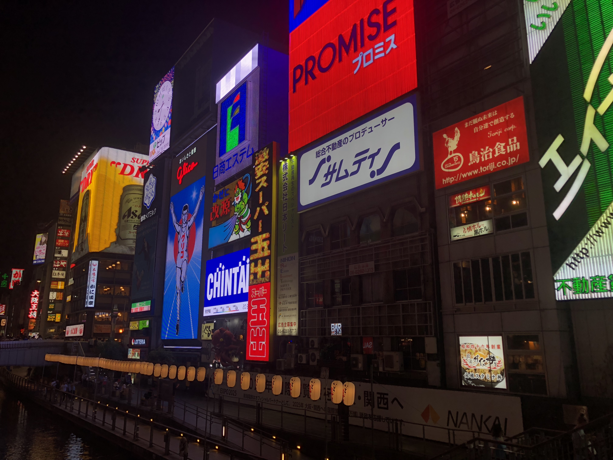
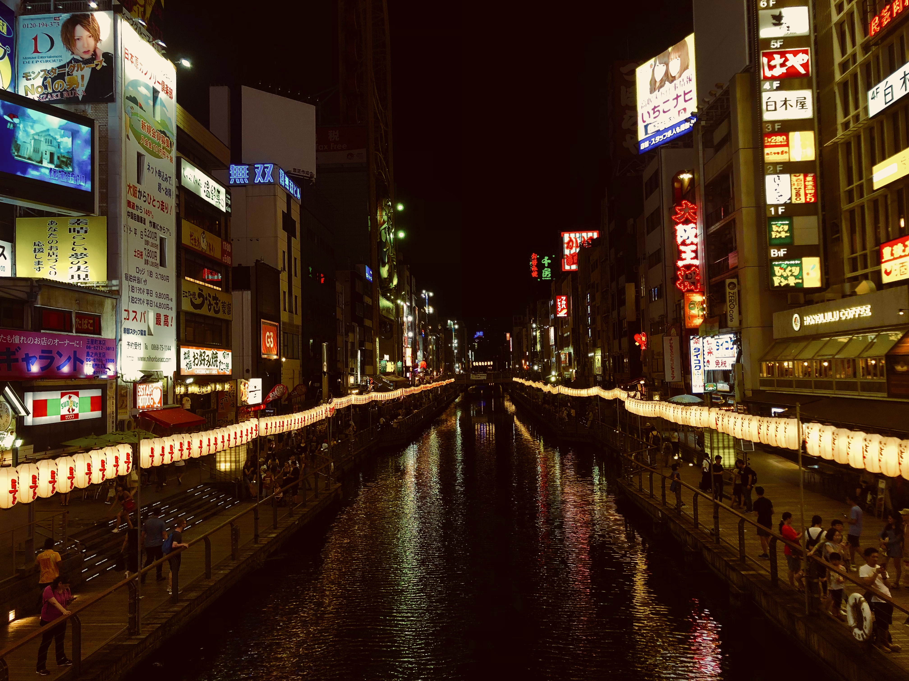
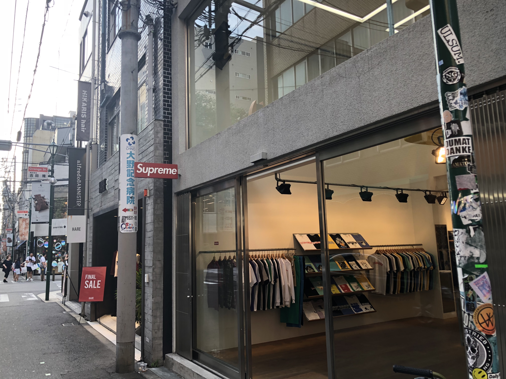
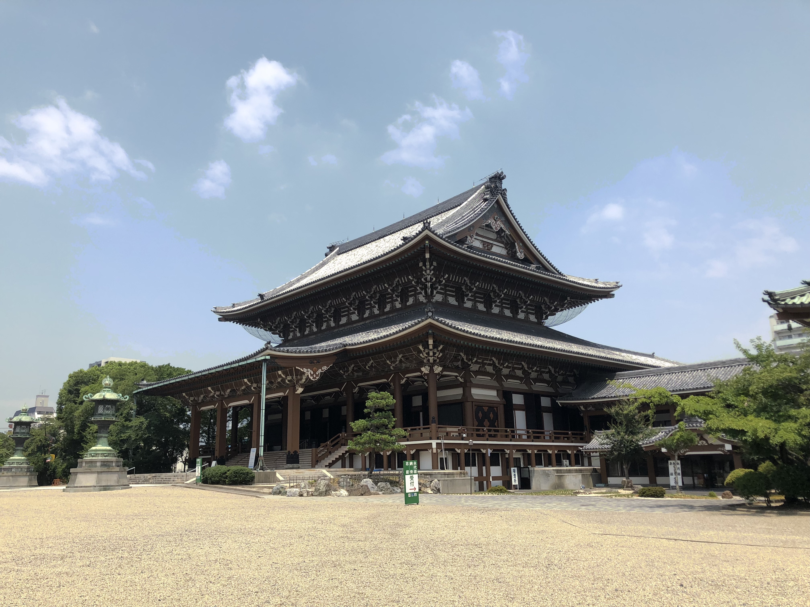

|
Osaka
is a smaller city, thanks to this the people of Osaka are very friendly
and are happy to show you what their city has to offer. My favourite
aspect of Osaka was their amazing food including their famous hand
pulled noodles and takoyaki. Osaka is a loud and proud city that
deserves the recognition it receives.
|

This
famous area in Osaka is called Dotonbori, which features these
recognizable neon signs of the "Glico Man" as well as the Asahi Super
Dry beer sign.
|

In Dotonbori, there is a canal that runs through the area
which is a popular tourist spot surrounded by restaurants and
establishments to have fun.
|
Famous food Osaka is known for including (from left to right) Gyoza
(japanese dumplings), Takyoaki (octopus and batter balls), and Hand
pulled noodles.
|

Supreme Osaka Store, there are only 11 Supreme stores in the world and 6 are in Japan.
|

There are
many beautiful temples around Osaka that are open to visitors where you
can catch a glimpse of the deep rooted traditions of Japan and it's
people.
|
Back to the top!
|